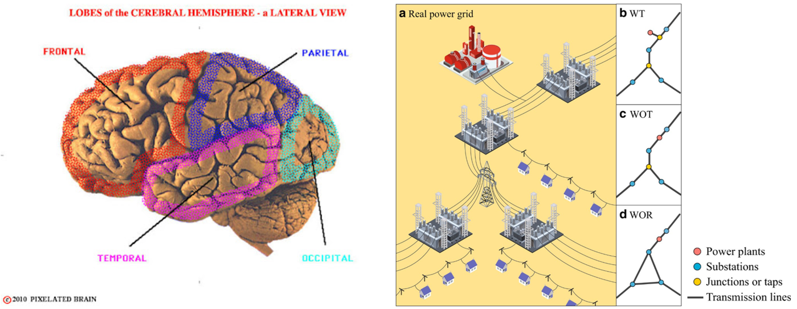
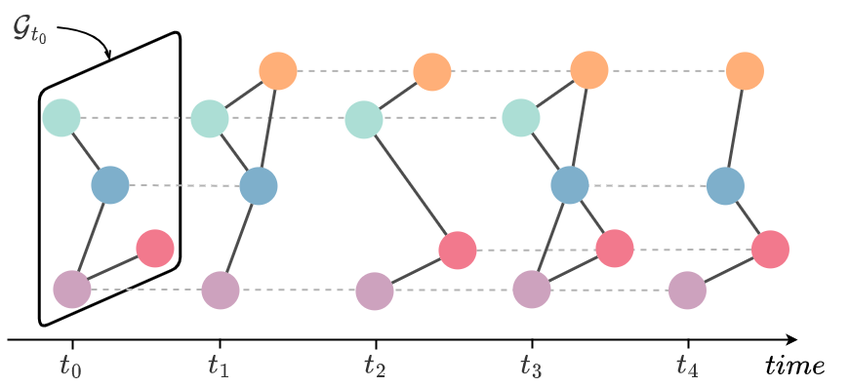
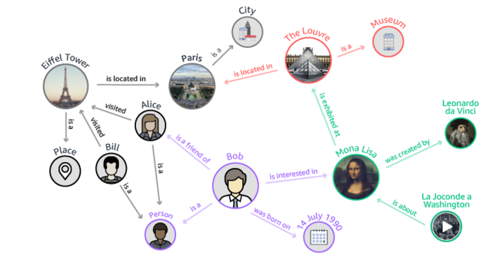

Introduction to Graph Machine Learning#
Graphs are a powerful and flexible data structure that naturally represent complex relationships and interactions among entities. From social networks and recommendation systems to biological networks and transportation systems, graphs are everywhere. Traditional machine learning techniques often struggle to capture these rich relational patterns. This is where Graph Machine Learning (Graph ML) comes into play.
🔍 Why Traditional Machine Learning Falls Short on Graph Data
Assumes Independent and Identically Distributed (i.i.d.) Data
Traditional ML models treat each data point as independent, ignoring dependencies that are essential in graph-structured data (e.g., social ties, molecular bonds).
Ignores Graph Topology
Conventional algorithms do not utilize the rich topological structure of graphs, such as neighborhood, clustering, or centrality, which often carry significant semantic information.
Feature |
Traditional Algorithms (KNN, Clustering) |
Graph Machine Learning |
|---|---|---|
Basis of relationship |
Distance in vector space (e.g., Euclidean, Cosine) |
Explicit edges in a graph |
Network topology |
Ignored |
Fully modeled |
Neighborhood definition |
Based on distance only |
Based on graph connectivity |
Graph-specific features (e.g., degree, centrality) |
Not supported |
Actively utilized |
Information propagation |
Not available |
Core concept (e.g., message passing) |
Modeling complex relations |
Limited |
Very expressive (e.g., in social or molecular networks) |
Typical applications |
Text classification, market segmentation |
Social network analysis, drug discovery |
Requires Tabular Input
Standard ML expects fixed-size vector inputs, while real-world data (e.g., social networks, biological systems) is often non-Euclidean and best represented as graphs.
Cannot Model Influence and Information Propagation
Many real-world phenomena involve the spread of information across nodes. Graph ML captures this through techniques like message passing, which are absent in traditional models.
Graph ML is a rapidly growing area at the intersection of machine learning and network science. It leverages both the features of individual entities (nodes) and their connections (edges) to make predictions, uncover patterns, and generate meaningful representations. Recent advances in Graph Neural Networks (GNNs) have made it possible to apply deep learning directly to graph-structured data, enabling breakthroughs in various domains.
This workshop is designed to provide a hands-on introduction to the core concepts, techniques, and tools used in Graph Machine Learning. We will cover:
The fundamentals of graph theory and graph data structures
Techniques for feature extraction and graph representation
Introduction to Graph Neural Networks and their applications
Practical exercises using Python libraries such as
NetworkXandPyTorch Geometric
By the end of this workshop, participants will have a solid understanding of how to represent, analyze, and learn from graph data, equipping them with skills applicable to modern machine learning challenges.
Let’s explore how learning from connections can lead to deeper insights!
1. Difference Between Tabular and Graph Data#
Tabular data consists of structured features for each instance, typically stored in a DataFrame. In contrast, graph data models complex relationships between instances, useful in various domains like social networks, recommender systems, and bioinformatics.
#pip install pandas
#pip install matplotlib
import pandas as pd
import matplotlib.pyplot as plt
# Example of tabular data
data = pd.DataFrame({
'ID': [1, 2, 3],
'Feature1': [0.5, 0.7, 0.2],
'Feature2': [0.1, 0.8, 0.3]
})
print("\nTabular Data:\n", data)
Tabular Data:
ID Feature1 Feature2
0 1 0.5 0.1
1 2 0.7 0.8
2 3 0.2 0.3
Different ways to define edges in a graph:#
Method |
Description |
Example Use Cases |
|---|---|---|
Explicit Structure |
Edges are defined by known relationships in the data. |
Social networks, molecules, transportation maps |
Feature Similarity |
Connect nodes with high similarity based on feature vectors. |
Image datasets, user profiles |
k-Nearest Neighbors (k-NN) |
Each node is connected to its k most similar nodes. |
Vector-based datasets, recommender systems |
Graph Structure Learning |
The model learns the optimal structure during training. |
Noisy or unknown structure, deep learning models |
Semantic or Logical Relations |
Edges represent logical or semantic dependencies between entities. |
Knowledge graphs, NLP dependency trees |
Co-occurrence |
Edges are formed between nodes that frequently appear together. |
Text analysis, medical co-diagnoses |
#pip install networkx
import networkx as nx
# Creating a simple graph with NetworkX
G = nx.Graph()
G.add_edges_from([(1, 2), (2, 3), (3, 1)])
plt.figure(figsize=(4, 4))
nx.draw(G, with_labels=True, node_color='lightblue', edge_color='gray')
plt.title("Graph Representation")
plt.show()
2. Introduction to Structured Data in Graphs#
Graphs are a flexible way to represent structured data, and they can vary widely depending on the nature of the data and its dynamics. Key types of graph structures include:
• Static Graphs These graphs do not change over time. The nodes and edges remain fixed after the graph is created.
Example: Road maps, power grids, or anatomical brain networks.

• Dynamic Graphs These graphs evolve over time, with nodes and/or edges appearing, disappearing, or changing attributes.
Example: Social networks where users form new connections or communication patterns evolve.
📌 Dynamic graphs often require temporal modeling techniques to capture the sequence or frequency of changes. 
• Homogeneous vs. Heterogeneous Graphs Homogeneous Graphs contain only one type of node and edge.
Heterogeneous Graphs consist of multiple types of nodes and/or edges, each possibly representing different entities or relationships.
Example (Heterogeneous): In a biological knowledge graph:
Nodes: proteins, diseases, drugs
Edges: interactions, treatments, causes
📌 Heterogeneous graphs require models that can handle multiple semantics simultaneously. 
3. Definition of Graphs and Basic Concepts#
Node (Vertex): Represents an entity (user, product, protein, etc.).
Edge: Represents a relationship between two nodes (friendship, interaction, protein-protein connection).
Types of Graphs:
Directed: Connections have direction.
Weighted: Edges have specific weights.
Heterogeneous: Includes different types of nodes and edges.
4. Overview of Machine Learning#
Supervised Learning: Data is labeled (classification, regression).
Unsupervised Learning: No labels (clustering, dimensionality reduction).
Semi-Supervised Learning: A mix of labeled and unlabeled data.
5. Connection Between Machine Learning and Graphs#
Graphs help model structural information, improving ML model accuracy. Examples:
Knowledge Graphs for information extraction.
Node representation learning using Node2Vec and Graph Neural Networks (GNNs).
7. Practical: Introduction to NetworkX and Graph Creation in Python#
# Creating a more complex graph with additional attributes
G = nx.DiGraph() # Directed graph
G.add_nodes_from([
(1, {"label": "User A"}),
(2, {"label": "User B"}),
(3, {"label": "User C"})
])
G.add_edges_from([(1, 2), (2, 3), (1, 3)])
plt.figure(figsize=(4, 4))
nx.draw(G, with_labels=True, node_color='lightgreen', edge_color='gray')
plt.title("Directed Graph Representation")
plt.show()
✅ In this chapter, we discussed the difference between tabular and graph data.
✅ We introduced fundamental graph concepts.
✅ We explored the importance of graphs in machine learning.
✅ We performed our first practical experiment with NetworkX.